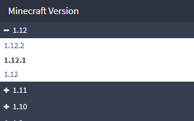
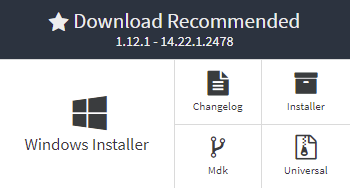
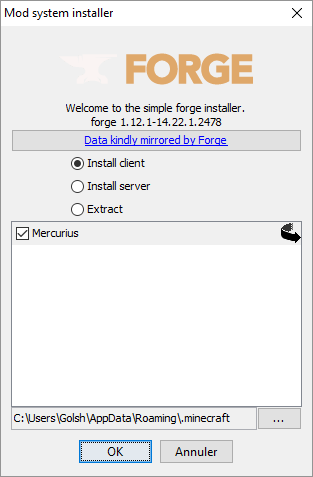
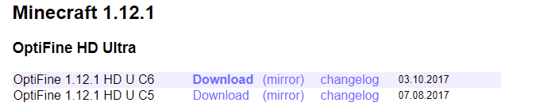
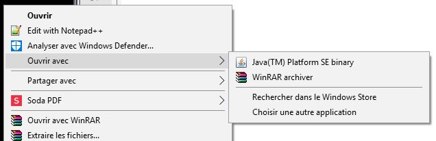
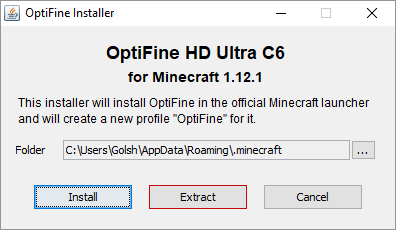
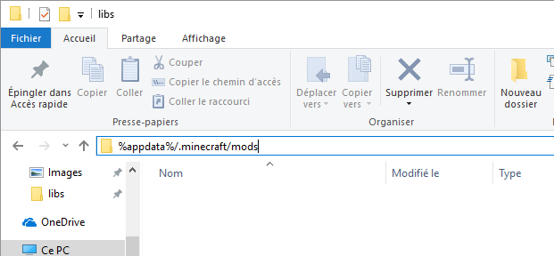
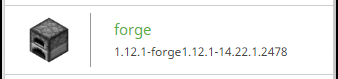

-
> Qu'est-ce qu'Herobrine Overhaul ?
Herobrine Overhaul est un mod créé pour ajouter à l'expérience de jeu sur le serveur d'herobrine.fr, la simplifier, etc.
-
> Qu'ajoute-t-il ?
Le mod ajoute un petit nombre de choses utiles :
- > Taille de l'historique du chat passé de 100 à 1000
- > Shaders pour la vision des Sapères et Onyx
- > Un clic droit sur un personnage affiche son nom RP et son nom Minecraft
- > Ajout d'un bouton pour activer/désactiver les messages commencant par "Hey!"
- > Bouton d'accès rapide au serveur
-
> Téléchargement
Version 1.0-BETA pour minecraft 1.12.1 Anciennes versions Sources
-
> Comment l'installer ?
- 1 > Téléchargez et installez la derniere version de Forge
Page de téléchargement de Forge Choisissez bien la bonne version ! Téléchargez le "Windows Installer" de la version Recommandée Lancez-le et cliquez sur "OK" - _ > [Facultatif]Téléchargez et installez la derniere version d'optifine
Page de téléchargement de Optifine Choisissez bien la bonne version ! Ouvrez le fichier avec "Java(TM) Platform SE binary" Cliquez sur "Extract", pas sur "Install" - 2 > Téléchargez le mod "Herobrine Overhaul" dans la section "Téléchargements" plus haut
- 3 > Ouvrir un explorateur de fichiers et tapez la ligne suivante :
%appdata%/.minecraft/mods Comme ceci - 4 > Copiez-collez le fichier du mod dans le dossier ouvert
- 5 > Lancez le launcher minecraft et changez de profil Cliquez sur la fleche verte à droite du bouton "Jouer" et choisissez le nouveau profil
- 6 > Enjoy !
- 1 > Téléchargez et installez la derniere version de Forge
-
> Changelog
- > Augmentation de la taille de l'historique
- > Mise en place d'un Json pour stocker automatiquement les couples nom RP/MC
- > Les noms d'un joueur sont ajoutés au Json dés qu'il parle dans le tchat
- > Ajout d'un (petit) menu pour le mod
- > Chargement auto du dernier shader visuel utilisé
- > Ajout d'un bouton pour activer/désactiver les messages commencant par "Hey!"
-
> Contact
Pour proposer des améliorations ou signaler un bug, envoyez un MP à AuNi sur herobrine.fr